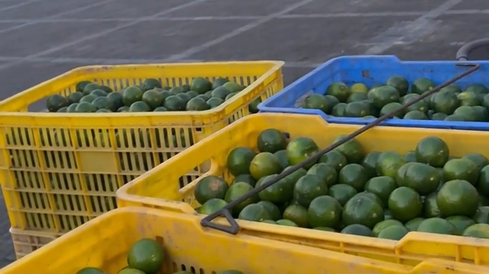
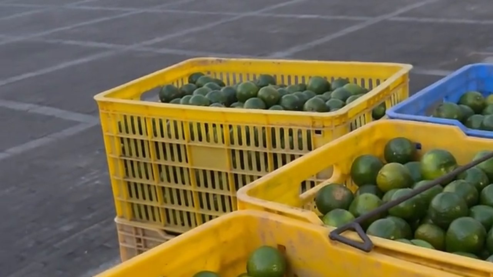

今天下午，有個二十出頭的年輕人背着相機來店裡。他叫阿豪，在隔壁鎮做自媒體，一坐下就問：
「滢姐，我拍咗十幾條片，播放量都唔過百。係咪要買部貴啲嘅機先得？」
「唔係器材問題。係你第一秒就輸咗。」
我把他手機裡的片子看了三條。第一條開頭是「大家好，我係阿豪，今日同大家講下新會陳皮」——前五秒，他還沒講到陳皮。
這篇我就把一條陳皮柑短視頻的拍法，從頭到尾拆給你看。這不是什麼玄學，是一套可以照做的工序。
一、黃金 3 秒：唔好自我介紹，直接拋懸念
短視頻的生死，在前 3 秒。觀眾的手指停在你的畫面上，只有兩個可能：他好奇，或者他劃走。
「大家好，我係××」是最貴的三秒——你用了觀眾最寶貴的時間，去講一件他不在乎的事。
我常用的三種開頭：
· 懸念型：「阿爺話，呢棵樹係佢阿爸嗰代種㗎——你知唔知一片陳皮可以換幾多錢？」
· 反問型：「同樣叫新會陳皮，點解有人賣九塊九，有人賣兩萬？」
· 衝突型：「呢筐青柑，我唔賣。」
共同點是：唔講你是誰，先講觀眾想知道什麼。
「咁唔自我介紹，人哋唔知我係邊個喎。」
「佢睇完先會想知你係邊個。留到最後三秒再講，效果完全唔同。」
二、21 秒，拆成 5 個鏡頭

一條片拍多長？20 秒左右最舒服。以「柑開採」這條為例，整條 21 秒，只有 5 個鏡頭：
鏡頭一（3 秒・大全景）：清晨柑園，日出與晨霧，果實掛滿枝頭。這一鏡是「交代環境」，讓觀眾知道自己在看什麼地方。
鏡頭二（4 秒・中景）：摘果。要剪「帶枝剪落」那一下——剪刀「咔」一聲，果臍不能傷。觀眾看的是動作。
鏡頭三（5 秒・特寫慢動作）：三刀法開皮。刀尖劃過果皮、白色內囊外翻——這是全片最「香」的畫面，值得用慢動作。
鏡頭四（4 秒・全景或航拍）：曬皮廣場。一排排竹架像棋盤，皮像金箔。這鏡負責「氣勢」。
鏡頭五（5 秒・中景）：人的心聲。老師傅的背影、一句感性的話——這鏡負責「記得住」。
記住兩個原則：一個鏡頭只講一件事；拍過程，唔好拍產品。觀眾想睇手、睇刀、睇太陽，唔係睇你舉起一包陳皮。
三、現場聲比配樂重要
阿豪的片配了很重的背景音樂。我問他：「你拍嗰下剪刀聲呢？」他愣了——他沒錄。
短視頻最好聽的聲音，往往是現場的：
· 剪刀剪落果枝的「咔」；
· 柑皮攤上竹籮的「沙沙」；
· 老師傅講話時的那口氣。
這些聲音讓觀眾相信「這是真的」。配樂只是襯底，現場聲才是主角。所以拍的時候：手機貼近動作、先錄夠現場聲，配樂開到兩成就好。
還有一件事——人要出鏡。一雙有裂口的手、一張曬黑的臉，比任何空鏡都留得住人。我們的皮是從手上出來的，畫面裡就該有人。
四、阿豪重拍了一次，這次他犯了三個錯

三天後阿豪又來了，說照著拍了，播放量還是三百。我們一起看片，問題一目了然：
錯誤一：開頭還是自我介紹。他忍不住加了「大家好」。——刪掉。
錯誤二：鏡頭太遠。摘果拍成了一個人在樹下動來動去，看不見手、看不見果。手機要貼近到看得清油室。
錯誤三：用了 AI 配音。字正腔圓，卻沒有一點情緒。觀眾一秒就聽出來不是人。
「但我講嘢有口音喎，會唔會唔專業？」
「你嗰口音就係你嘅招牌。新會人講新會陳皮，先叫真。你走去學主播腔，觀眾反而唔信你。」
他第三次拍的片子，我把三個錯改掉，其他都沒動——三天後播放量過了十萬。不是因為拍得更漂亮，是因為終於像一個真人在講一件真事。
五、最後，把方法寫成一張清單

如果你也想拍一條陳皮柑的短視頻，照這個清單做：
1. 開頭 3 秒：拋懸念、拋反問、拋衝突，唔好自我介紹。
2. 全片 20 秒上下：4 到 6 個鏡頭，一鏡一事。
3. 一定要有特寫：手、刀、油室、湯色——觀眾靠細節判斷真假。
4. 現場聲為主：先收音，再配樂（兩成音量）。
5. 有人出鏡：你的手、你的臉、你的口音，就是信任。
6. 結尾留鉤子：「下集教你點分辨工藝皮」比「多謝觀看」有用一百倍。
7. 發布時間：早上 7:30–8:30 是流量高峰，正好是很多人通勤滑手機的時候。
8. 標籤 5 到 8 個：一個大詞（新會陳皮）＋幾個場景詞（柑開採、陳皮村、曬皮）＋一兩個人群詞。
「姐，你覺得爆款係咪有運氣成分？」
「運氣係留俾日日拍嘅人。你一個禮拜拍一條，爆咗都接唔住；你日日拍，爆嗰日你先有嘢俾人睇。」
常見問題
用手機拍夠不夠？一定要買相機嗎？夠。手機的畫質早就過剩，短視頻的勝負在開頭三秒、在特寫、在聲音，不在器材。先用手機拍滿三十條，再考慮升級。
一條短視頻拍多長最合適？20 秒上下、4 到 6 個鏡頭最舒服。太短講不清一件事，太長留不住人。
開頭唔知講咩，有冇模板？三種模板：懸念（「你知唔知一片陳皮換幾多錢？」）、反問（「同樣叫新會陳皮，點解差咁遠？」）、衝突（「呢筐青柑，我唔賣」）。共同點是先講觀眾想知道的。
一定要真人出鏡嗎？建議要。手、臉、口音都是信任的來源。新會人講新會陳皮的那口音，比標準主播腔更有說服力。
配樂同現場聲，邊個重要？現場聲。剪刀聲、竹籮聲、說話的氣息，讓觀眾相信這是真的；配樂開到兩成做襯底就夠。
幾時發布最好？標籤點揀？早上 7:30–8:30 是流量高峰。標籤 5 到 8 個：一個大詞（新會陳皮）＋場景詞（柑開採、陳皮村、曬皮）＋人群詞（養生、廣東特產）。
結語：你拍的不是陳皮，是時間
阿豪臨走時問我最後一句：「姐，咁我下一條拍咩？」
我指着門外曬場上那一排排竹架說：「拍佢哋點樣一日一日變色。三年之後，你就有一條別人拍唔到嘅片。」
陳皮呢行最好嘅題材，唔係你講得幾好，係你真係等得起。你拍嘅唔係陳皮，係時間——時間係拍唔假嘅。
想睇這種拍法拍出來的成品，看這篇《九月的青柑上市了：為什麼行家開始「存青皮」？》；想知道柑園這一季的真實場景，翻翻這篇《溯源區的柑園：一棵柑樹要長三年才結果》。
下期預告：我把手機架在曬場，連續拍了七天同一片皮——從橙紅到深褐，第七天的顏色連我自己都嚇一跳。這條「時間流逝」的片子怎麼拍？下期講。